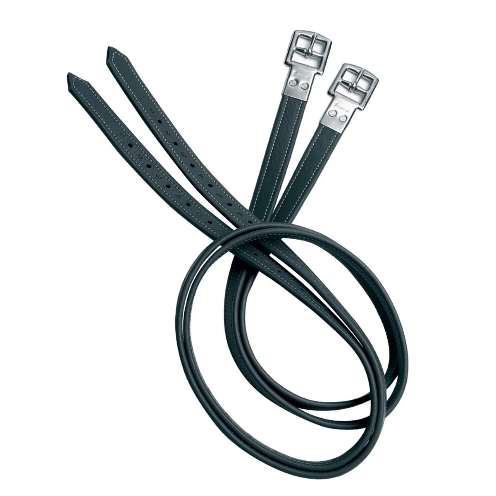

Equipment Collection
Premium riding gear designed for performance and style


Jumping Saddle
₹3000Experience unmatched comfort and performance with our handcrafted Jumping Saddle. Read more
- 100% Genuine Leather
- Ergonomic, lightweight design
- Custom sizes available
- Eco-friendly tanning process
Premium Jumping Saddle
₹3500Our premium jumping saddle offers superior craftsmanship and advanced features. Read more
Available Models:
- 100% Genuine Leather
- Ergonomic, lightweight design
- Custom sizes available
- Eco-friendly tanning process

Prestige 3A017 Non-Stretch Stirrup Leathers
₹7000We love these Rahi Non-Stretch Stirrup Leathers because of their high-quality non-stretch design. Read more
Available Models:
- 100% Genuine Leather
- Ergonomic, lightweight design
- Custom sizes available
- Eco-friendly tanning process